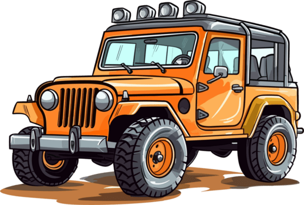

Our project focuses on creating a robust Vehicle Tracking & Monitoring System designed for environments where data integrity and continuity are critical. By simulating a radio connection from a moving vehicle (Jeep) using the APRS protocol, we ensure reliable tracking even in extreme conditions.
This project was developed by:

qmsldkfjmqlksdjfmqklsjdfmklqsjdmfklqjsmdklf